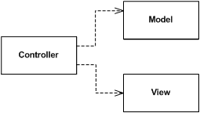

A screen and components with all application specific behavior extracted into a controller so that the widgets have their state controlled entirely by controller.
Factor the UI into a view and controller where the view handles simple mapping to the underlying model and the the controller handles input response and complex view logic.